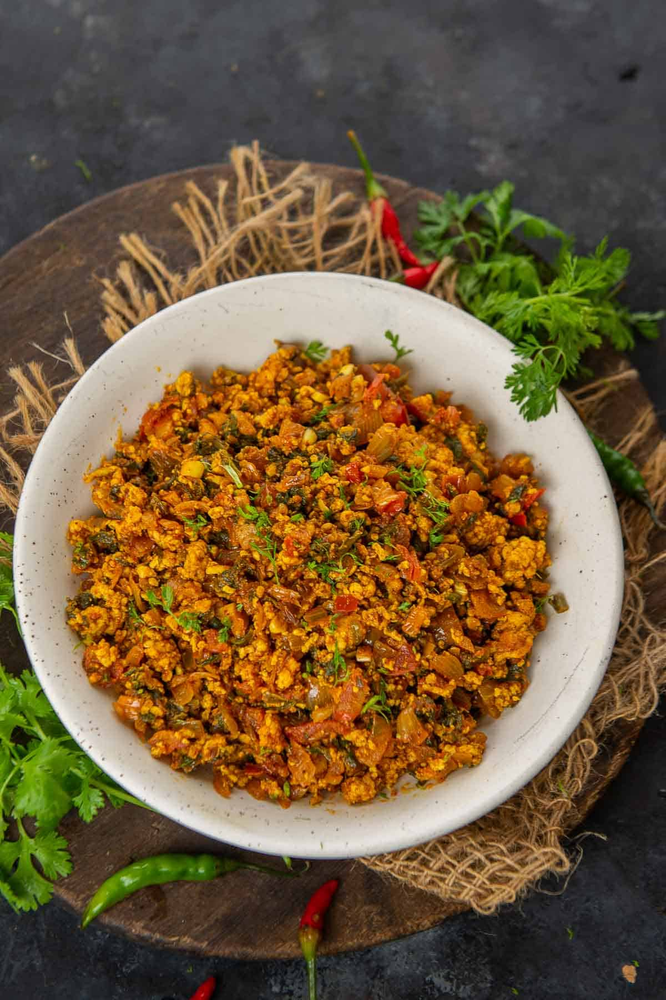

Paneer Bhurji is a popular Indian dish which has scrambled paneer (Indian cottage cheese) cooked with onion, tomatoes and spices! This easy and quick recipe gets done in less than 30 minutes and is great for breakfast or lunch. Paneer bhurji goes well with flat breads like roti and paratha or is great on toast as well.